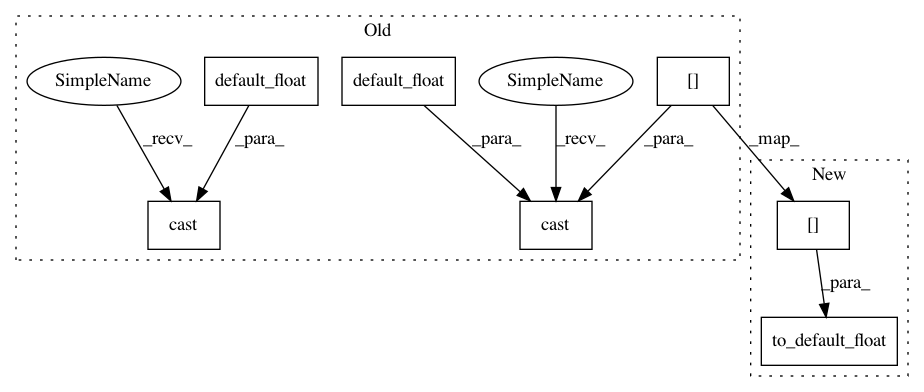

516f97c543f0816677fd00ec24b47f31f2618f67,gpflow/models/gplvm.py,BayesianGPLVM,log_likelihood,#BayesianGPLVM#,143
Before Change
else tf.linalg.diag_part(self.X_data_var)
)
NQ = tf.cast(tf.size(self.X_data_mean), default_float())
D = tf.cast(tf.shape(Y_data)[1], default_float())
KL = -0.5 * tf.reduce_sum(tf.math.log(dX_data_var))
KL += 0.5 * tf.reduce_sum(tf.math.log(self.X_prior_var))
KL -= 0.5 * NQ
KL += 0.5 * tf.reduce_sum(
(tf.square(self.X_data_mean - self.X_prior_mean) + dX_data_var) / self.X_prior_var
)
// compute log marginal bound
ND = tf.cast(tf.size(Y_data), default_float())
bound = -0.5 * ND * tf.math.log(2 * np.pi * sigma2)
bound += -0.5 * D * log_det_B
bound += -0.5 * tf.reduce_sum(tf.square(Y_data)) / sigma2
bound += 0.5 * tf.reduce_sum(tf.square(c))
After Change
else tf.linalg.diag_part(self.X_data_var)
)
NQ = to_default_float(tf.size(self.X_data_mean))
D = to_default_float(tf.shape(Y_data)[1])
KL = -0.5 * tf.reduce_sum(tf.math.log(dX_data_var))
KL += 0.5 * tf.reduce_sum(tf.math.log(self.X_prior_var))
KL -= 0.5 * NQ
KL += 0.5 * tf.reduce_sum(
In pattern: SUPERPATTERN
Frequency: 3
Non-data size: 7
Instances
Project Name: GPflow/GPflow
Commit Name: 516f97c543f0816677fd00ec24b47f31f2618f67
Time: 2020-03-16
Author: st--@users.noreply.github.com
File Name: gpflow/models/gplvm.py
Class Name: BayesianGPLVM
Method Name: log_likelihood
Project Name: GPflow/GPflow
Commit Name: 516f97c543f0816677fd00ec24b47f31f2618f67
Time: 2020-03-16
Author: st--@users.noreply.github.com
File Name: gpflow/models/gplvm.py
Class Name: BayesianGPLVM
Method Name: log_likelihood
Project Name: GPflow/GPflow
Commit Name: 516f97c543f0816677fd00ec24b47f31f2618f67
Time: 2020-03-16
Author: st--@users.noreply.github.com
File Name: gpflow/models/sgpr.py
Class Name: SGPR
Method Name: log_likelihood
Project Name: GPflow/GPflow
Commit Name: 516f97c543f0816677fd00ec24b47f31f2618f67
Time: 2020-03-16
Author: st--@users.noreply.github.com
File Name: doc/source/notebooks/tailor/gp_nn.pct.py
Class Name:
Method Name: map_fn